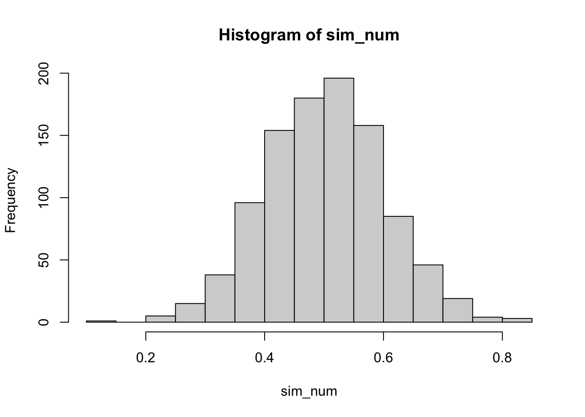

sim_num <- rnorm(1000,0.5,0.1)
hist(sim_num)
Read my latest on on how we can use political science to help rebuild Syria in The Conversation.
Presenting my new R package ordbetareg for bounded dependent variables.
ordbetareg as a synthesis of the best of what is currently available.
Robert Kubinec
June 26, 2022
Interested in more social science on contemporary issues? Check out my just-released book with Cambridge University Press and use discount code KUBINEC23 to get 20% off.
Limited dependent variables, or continuous variables with lower and upper bounds, are quite common in the social sciences but do not fit easily with existing statistical models. In this Rmarkdown document, I show why these issues are important to consider when modeling your data, discuss existing R packages useful for fitting these models, and also present ordbetareg, an R package with a new variant of Beta regression that builds on and simplifies existing approaches (see paper here that is forthcoming in Political Analysis). In essence, ordbetareg offers a drop-in replacement for OLS that respects the bounds of a dependent variable.
I will be presenting this post as part of Leanne Powner’s Methods Cafe workshops via Zoom on Friday, July 1st, at 12 pm EST. You can find more info on the workshop along with Zoom links here. You can also get a copy of the Rmarkdown document here if you want to run the file yourself.
Although I argue that ordbetareg is as useful or more useful than existing packages, I provide a broad overview in this document so that the reader can gain an appreciation for the range of work on this topic, as well as the pros and cons of existing models.
Before moving into empirical modeling, I first discuss what a limited dependent variable (DV) is and why it is so hard to statistically model it. The crucial difficulty for variables with bounds is whether the variable is continuous. Discrete variables are by nature bounded and countable. Continuous variables, on the other hand, are difficult to reconcile with hard bounds. The very definition of continuity suggests that the variable is infinitely divisible, so where the continuous part ends and the discrete bound begins can’t actually be known.
The most common modeling technique for limited continuous variables is ordinary least squares (OLS) regression, in no small part because OLS is the default model for any kind of continuous outcome (and even some that are discrete). OLS does have remarkable properties, such as being the most efficient estimator for an unbounded continuous variable. The reason for this has to do with the unique properties of the Normal distribution. If all we know about a distribution is that it is continuous, then OLS is hard to beat.
However, in this case we know more about the DV than that it is continuous. We know that the variable can have both an upper and lower bound. The Normal distribution, upon which OLS is based, does not have any bounds. In principle, any value on the real number line can come out of a Normal distribution–though with quite low probability.
To demonstrate this, I use R’s rnorm command to simulate data from a Normal distribution with a mean of 0.5 and a standard deviation (SD) of 0.05. I first draw about 1,000 random numbers from this distribution and plot them as a histogram:
This plot shows that the distribution is centered around 0.5 with a maximum of 0.8349045 and a minimum of 0.129012. If this DV was bounded between 0 and 1, we would presumably have little to worry about observations exceeding the bounds. However, let’s do the same analysis, but this time sample 10,000,000 observations:
As can be seen, the bounds of the plot are now much wider. The max value from the draws is 1.0437146 and the min value is -0.0219126. What happened is that by getting way more draws, we allow for very low-probability events to occur. Even with a Normal distribution tightly centered around 0.5, there is always some chance that an observation will arise outside of the 0 to 1 bounds. The Normal distribution can’t handle bounds–it essentially ignores them because technically, any observation can happen with some probability, even if that probability is very small.
While OLS cannot handle bounds, there is another distribution that is continuous and bounded above or below–the Beta distribution. The Beta distribution is related to the binomial distribution, and it can be thought of as a prior distribution for the probability of a successful trial in a binomial/Bernoulli distribution. The Beta distribution has two parameters, usually denoted \(\alpha\) and \(\beta\), which represent the number of prior successes and failures. For example, suppose we want to come up with our best guess of how Donald Trump might do in the 2024 presidential election given his performance in the 2020 election in terms of the number of electoral college votes he received (which are roughly proportional to the popular vote for president in the United States). In that case, we could use the Beta distribution to get a sense of our uncertainty in that statement by plugging in 232 for the number of electors Trump won in 2020 for \(\alpha\) and 306 for the number of electors that Trump didn’t win for \(\beta\)–i.e., all the electors Joe Biden won in 2020:
What the plot above shows is the range of uncertainty around the proportion of electors that Trump could win in 2024 if we use his 2020 performance as our prior knowledge. We would expect, based on chance alone, for his 2024 total to vary between 40% of electors to 48% of electors. In other words, he would be likely to still lose, but he could get a lot closer to a majority of electoral college votes.
In a sense, the Beta distribution is a distribution of probabilities. The probability represents the chance of success in an independent trial, in this case winning an elector. If we increase the sample size, say by including how many electoral votes Trump won in 2016 (304 out of 531), our uncertainty would decrease:
The plausible range of percentages/probabilities is now within 48% to 52% as taking into account Trump’s 2016 results increases our sample size while also increasing our most likely estimate of his 2024 performance. Importantly, the Beta distribution respects bounds. Suppose, for example, that we only expect Trump to win 1 out of 538 electors. That would concentrate a substantial amount of plausible values at the lower end of the range of the variable:
What we can see here is a unique feature of the Beta distribution: it respects upper and lower bounds. Here the Beta distribution says it is most likely Trump wins a very small number of electors – below 1% of them – but it is plausible that he still wins more than 1%. It is impossible, as it should be, for Trump to win less than 0% of electors. OLS, on the other hand, would allow for Trump to win negative electoral votes, which is nonsensical.
The Beta distribution also has a role in Bayesian inference by representing our prior belief in a probability or proportion. Suppose that is the night of the 2024 election, and we want to know how many additional electors Trump could win given how many we’ve observed him win so far. Of course, this is somewhat unrealistic, as the electors are clustered within states, but we’ll ignore that for the example. Suppose it is quite early, and so far we have seen Trump win 3 electors and lose 7. That leaves 528 electors “on the table.” We can calculate that using what is called the Beta-binomial distribution, which is where we multiply our Beta prior distribution with a binomial distribution for the remaining number of electors.
We can see that our prior is quite vague–we’ve only observed 10 electors out of a possible 538. As a result, the Beta-binomial distribution is telling us that there could be a wide range of expected results for Trump from the remaining 528, though on the whole we expect him to lose.
This extended discussion was designed to show that in many ways, the Beta distribution is an intuitive way of representing a proportion, or really, a probability.
However, there is a really big problem with the Beta distribution. Probabilities aren’t every equal to zero or one–that would be a situation of complete uncertainty, which would have no probability involved. Similarly, the Beta distribution can never produce values that are equal to 0 or 1.
For example, let’s say we think Trump could win .01 elector and lose 537.99 of them (hypothetically, of course). We would then get the following values for the Beta distribution:
We see that our lower bound is tiny – a number that is very close to, but not exactly, zero. Just like the Normal distribution, the Beta distribution is continuous, so it can’t ever be equal to a single point. The Beta distribution can let probabilities get very small, but never actually zero.
This is a problem because what if we wanted to use it to model the proportion of people who support Trump in the population? We know that could actually be zero or one. This is the main limitation of what is known as Beta regression, where the Beta distribution is employed just like OLS–we have a model with covariates that has an effect defined over the range of the Beta distribution, i.e. strictly within upper and lower bounds.
Another way of dealing with the same problem is to use what is known as the fractional logit model. Popularized by the econometricians Papke and Wooldridge, the fractional logit model is known as a “quasi-likelihood” because it isn’t actually a statistical distribution. For that reason, it is a bit confusing to describe exactly what it is. In essence, we start with the Bernoulli distribution, which I will reproduce below:
\[ P(X = 1)= p^x(1-p)^{1-x} \] This distribution is quite simple. It says that the probability that X equals one is equal to the parameter \(p\) for probability. The variable X can only take a value of 0 or 1. If X is equal to 1, we get \(p^x\), and if X is equal to 0, we get \((1-p)^{1-x}\).
The fractional logit model inserts a continuous X instead of a binary one. For example, if X=0.6, and \(p=0.4\), then we get
\[ P(X=0.6) = 0.4^{0.6}(0.6^{0.4}) = 0.47 \]
This formula essentially tries to force the Bernoulli distribution to handle continuous variables by simply plugging them in. The problem is, what we end up with is not actually a statistical distribution. This means I can’t generate data using a function like rnorm, and there also isn’t a PDF or a CDF. In other words, it’s a bit of a hack.1
It does “work” in the sense the probability of X increases as \(p\) is closest to X. For example, you can look at the probability of various values of \(p\) if X is equal to 0.3:
X <- 0.3
p <- seq(0,1,by=0.001)
frac_logit <- function(x,p) (p^x)*((1-p)^(1-x))
plot(p,frac_logit(x=X,p=p))We can see that the parameter \(p\) hits a maximum at 0.3, or the same value as X. This is a neat trick, but because we can’t sample from this distribution, it is tough to characterize how the distribution performs. While this model is quite practical, it was published long before people started using Beta regression, which I think is superior as it is an actual distribution. As I discuss later, in most situations, Beta regression is preferable–and if for some reason you can’t or won’t use Beta regression, probably best just to stick with OLS, which has known properties.
Having now presented the various estimators, I’ll focus on fixes to the Beta distribution. As can be seen, the Beta distribution has some very desirable properties–it is bounded between 0 and 1, it is continuous and it can take on a variety of shapes. The only problem is the issue with the bounds–what if we have a variable that actually equals 0 or 1?
One solution proposed in the literature is to do a bit of “nudging.” This formula, first proposed by Smithson and Verkuilen (2006), is as follows:
\[ y_j = \frac{y_i(N-1) + 0.5}{N} \]
I do not recommend this formula. While it seems straightforward, it depends on \(N\), or sample size. This means that the amount of nudging that happens changes as the sample size changes. We can illustrate this issue by transforming a dataset of equally spaced values from 0 to 1 while we vary \(N\) in the transformation formula:
N <- seq(100,10000,by=10)
min_y_j <- sapply(N, function(n) {
y_i <- seq(0,1,length.out=n)
y_j <- (y_i*(n-1) + 0.5)/n
min(y_j)
})
max_y_j <- sapply(N, function(n) {
y_i <- seq(0,1,length.out=n)
y_j <- (y_i*(n-1) + 0.5)/n
max(y_j)
})
plot(N,min_y_j)As can be seen, the value of the highest or lowest value in the distribution gets nudged closer and closer to 0 or 1 as \(N\) gets larger. This means that we get increasingly implausible outliers as \(N\) grows in a function that is highly non-linear. This will strongly effect estimates, as I show in my paper’s simulation. My main reason for bringing up this fix is to discourage its use given these dangerous side effects.
However, there has been substantial developments in the past 10 years that provide much more satisfactory ways of helping the Beta distribution deal with bounds. The most well-known recent methodology to fix the Beta distribution’s issues are known as the zero-or-one and zero-and-one beta regression models (also called the ZOIB). These combo models add distinct sub-models for the discrete responses at 0 or 1. The zero-or-one can model either 0s or 1s plus a continuous Beta regression, but not both 0s and 1s at the same time, while the zero-and-one can model 0s, 1s, and everything in between with a Beta regression. Because it is a general solution, I’ll look at the zero-and-one formulation before turning to my model. I developed ordered beta regression specifically to deal with limitations in the ZOIB.
We can represent the ZOIB mathematically in terms of three distinct probabilities for a bounded response \(y_i\): \(Pr(y_i=0)\) for the responses that equal 0, \(Pr(y_i=1)\) for the responses that equal 1, and \(Pr(y_i>0 \cap y_i<1)\) for the responses that are continuous (strictly between 0 and 1). In the formula below, I use \(\alpha\) for \(Pr(y_i=0)\), \(\gamma\) for \(Pr(y_i=1)\), and \(\delta\) for \(Pr(y_i>0 \cap y_i<1)\). The parameters \(\mu\) and \(\phi\) represent the mean and dispersion of the Beta regression that can be used for the continuous responses. As can be seen, the ZOIB can handle any type of response:
\[ f(y_i|\alpha,\gamma,\delta,\mu,\phi) = \left\{\begin{array}{lr} \alpha & \text{if } y_i=0\\ (1-\alpha)\gamma & \text{if } y_i=1\\ (1-\alpha)(1-\gamma)\text{Beta}(\mu,\phi) & \text{if } y_i \in (0,1)\\ \end{array}\right\} \]
However, the issue with this model is that each sub-model is independent. The probability of a 0 can change independently of any other probability, and the value of a 1 can change independently of probability of the Beta regression model. This might seem fairly abstract, but it is important because each model sub-component has to have its own linear model. For example, suppose we have one predictor in our model, say GDP. We would end up with 3 separate regression coefficients of the effect of GDP on \(y_i\), one for 0s, one for 1s, and one for all the values between 0 and 1.
Now, there may be situations where having that many coefficients is warranted. As I discuss in my paper, that could happen when you think that 0s and 1s are distinct processes from the continuous values. Suppose that 0 = no drug use, and then 0 - 1 is equal to at least some drug use. In that sense, we could use the model above to separately predict the decision to choose drugs from the decision of how many drugs to consume if someone becomes a drug user. For that reason, the ZOIBs are actually related to selection and hurdle models where someone selects into and out of the continuous responses.
To be clear, the ZOIB does solve the Beta regression problem–it can estimate a model with 0s and 1s and anything in between. It just does so with a lot of extra parameters, requiring the user to have 3 different linear models. If the scale is one construct, though, that can be overkill, such as with the electors example we started with. I developed the ordered beta regression model specifically for an experiment I ran with an outcome that represented the fraction invested in a given company. The difference between 0% invested and 1% invested was one of degree, not kind. Coefficients for the effect of covariates on investment that differed between 0% and 1% didn’t make sense.
For that reason, I derived the ordered beta regression model as a simpler alternative that still relies on Beta regression’s strong points. The formula for the ordered beta regression model is below, defined in terms of the three probabilities, \(\alpha\) (0s), \(\delta\) (1s), and \(\gamma\) (continuous responses). The main difference is that I introduce cutpoints, \(k_1\) and \(k_2\), parameters drawn from the more widely known ordinal logit model. These cutpoints permit a single linear model, \(X'\beta\), to predict all three parts of the outcome: 0s, 1s and anything in between:
\[ \left\{\begin{array}{lr} \alpha = 1 - g(X'\beta - k_1)\\ \delta = \left[g(X'\beta - k_1) - g(X'\beta - k_2) \right ] \text{Beta}(g(X'\beta),\phi)\\ \gamma = g(X'\beta - k_2)\\ \end{array}\right\} \]
The intuition behind this model is the same as the ordinal logit model. Imagine we have a single scale, \(y_i^*\). This scale is continuous and unbounded, but we only observe \(y_i\), which is bounded between 0 and 1. The cutpoints determine where we observe values at the boundaries instead of the fully continuous \(y_i^*\). In other words, the cutpoints alert us to how different the bounds are from the other continuous values. If the cutpoint values are high in absolute terms, the amount of censoring is likewise high. If the cutpoints are equal to zero, then there is no censoring and we essentially end up with Beta regression without any boundary issues.
Simple, easy, breezy. Because this model only has one set of coefficients for a given covariate, it is a drop-in replacement for OLS. It only has two additional parameters, which are the cutpoints.
The main difference between the ZOIB and the ordered beta regression model is how they treat the discrete values at the bounds. The ZOIB is premised on these values coming from a distinct sub-process, like a selection model. The ordered beta regression model allows for qualitative differences between the bounds and the continuous responses. The amount of difference is a function of the data and will vary from sample to sample.
Now that I have defined the models statistically, I will turn to an applied regression problem to illustrate their usage and practical significance. To do so I use data from the Varieties of Democracy (V-DEM) project, which records the proportion of the parliamentary seats in the lower chamber of a country that are directly elected, as opposed to being appointed. This value could be 0 (all seats are appointed) to 100, indicating that all seats are elected using the popular vote. I use the V-DEM Github R package to get their data, and subset it to the most recent year (2021):
For simplicity, we will use a single covariate, to what extent “power is distributed by social groups”, which could indicate that some seats are appointed or reserved to respect the rights of particular groups in a society. Our model looks at associations between the power of social groups and the share of appointed vs. elected seats in 2021 by comparing countries to each other. We can first look at the distribution of the share of elected seats in parliaments:
The plot shows that most scores are equal to 100, indicating all seats are elected via popular vote. There are some legislatures, though, where everyone is appointed, and some where there are some who are appointed and elected. These countries include the following:
[1] "Egypt" "Colombia" "Bangladesh"
[4] "India" "Kenya" "Tanzania"
[7] "Uganda" "Zambia" "Zimbabwe"
[10] "Botswana" "Burundi" "Iran"
[13] "Iraq" "Qatar" "Sierra Leone"
[16] "The Gambia" "Kazakhstan" "Rwanda"
[19] "Eswatini" "Comoros" "Guyana"
[22] "Hong Kong" "Kuwait" "Mauritius"
[25] "Singapore" "United Arab Emirates" "Zanzibar" As can be seen, there are 26 countries that have these mixed legislatures. Some of these countries, such as India and Kenya, are known to have distinct ethnic minorities that might want to have protected representation.
The covariate that might predict this variation, the power of social groups, is a continuous measure with significant dispersion:
To test this question, I will fit models for each of the types of statistical distributions I have presented, including OLS, fractional logit, re-scaled Beta regression (normalizing to between 0 and 1), ZOIB, and ordered beta regression. I will first rescale the outcome to be between 0 and 1 instead of 0 and 100, as V-DEM coded it. This is necessary for some of the R packages, but does not affect the substantive results. In fact, any bounded variable can be rescaled to 0 and 1 using a simple formula.
First we can run OLS using the base R command lm. I include a quadratic effect to see if powerful social groups are associated with some, but not all, elected seats:
Call:
lm(formula = appoint_chamber ~ power_groups + I(power_groups^2),
data = vdem)
Residuals:
Min 1Q Median 3Q Max
-0.98167 0.01211 0.02436 0.04901 0.38783
Coefficients:
Estimate Std. Error t value Pr(>|t|)
(Intercept) 0.912202 0.020567 44.353 < 2e-16 ***
power_groups 0.077946 0.014646 5.322 3.23e-07 ***
I(power_groups^2) -0.019882 0.008681 -2.290 0.0232 *
---
Signif. codes: 0 '***' 0.001 '**' 0.01 '*' 0.05 '.' 0.1 ' ' 1
Residual standard error: 0.1879 on 169 degrees of freedom
(7 observations deleted due to missingness)
Multiple R-squared: 0.1437, Adjusted R-squared: 0.1336
F-statistic: 14.18 on 2 and 169 DF, p-value: 2.023e-06Our intuitions could be partly confirmed: as social groups become more powerful, seats are more likely to be elected, but only up to a point. Above that point, they in fact become more likely to be appointed. To figure out what the relationship looks like, we can use lm’s predict function for varying values of power_groups, and plot the result:
ex_data <- seq(min(vdem$power_groups),
max(vdem$power_groups),length.out=100)
lm_pred <- predict(lm_est, se.fit=T,
newdata=tibble(power_groups=ex_data))
ggplot(mapping=aes(y=lm_pred$fit,x=ex_data)) +
geom_ribbon(aes(ymin=lm_pred$fit + 1.96*lm_pred$se.fit,
ymax=lm_pred$fit - 1.96*lm_pred$se.fit),fill="blue",
alpha=0.5) +
geom_hline(yintercept=1,linetype=2) +
geom_line() +
scale_y_continuous(labels=scales::percent_format()) +
labs(y="% Seats Elected",
x="Power of Social Groups") +
theme_tufte2The plot shows that when the power of social groups is equal to +2, most seats are elected, but when the power of social groups is equal to +3, fewer than all seats are elected. So in other words, when social groups are the most powerful, at least some seats are appointed. When social groups have little if any power, all seats are likely to be appointed.
One issue is that this prediction is close to the maximum of the scale: 0.9885877. While OLS doesn’t predict out of bounds in this example, the confidence interval of the prediction is likely to exceed zero. We can test that by examining the maximum of the confidence interval:
We can see that high end of the high end 5% to 95% confidence interval reaches 1.09. In other words, OLS predicts that when social groups are moderately powerful, 109% of seats will be elected. This possibility, of course, is ridiculous, and makes no sense given our scale. Again, OLS can’t respect bounds, which means that we can get intervals that can’t be mapped on to the underlying scale in a meaningful sense.
To respect the bounds, we’ll first use fractional logit, the simplest method although, as I mentioned earlier, a bit of a hack. We can estimate this model with a base R command glm and the quasibinomial family argument:
frac_logit_est <- glm(appoint_chamber ~ power_groups + I(power_groups^2),data=vdem,
family = quasibinomial)
summary(frac_logit_est)
Call:
glm(formula = appoint_chamber ~ power_groups + I(power_groups^2),
family = quasibinomial, data = vdem)
Coefficients:
Estimate Std. Error t value Pr(>|t|)
(Intercept) 2.452975 0.350523 6.998 5.82e-11 ***
power_groups 0.904496 0.215441 4.198 4.34e-05 ***
I(power_groups^2) 0.004464 0.166477 0.027 0.979
---
Signif. codes: 0 '***' 0.001 '**' 0.01 '*' 0.05 '.' 0.1 ' ' 1
(Dispersion parameter for quasibinomial family taken to be 0.5591972)
Null deviance: 60.415 on 171 degrees of freedom
Residual deviance: 48.359 on 169 degrees of freedom
(7 observations deleted due to missingness)
AIC: NA
Number of Fisher Scoring iterations: 7Interestingly, we do not see the same relationship. Fractional logit does not find a very strong quadratic effect, and instead only a linear effect of the power of social groups on the share of elected seats. We can replicate our prediction to see what the estimates look like:
pred_power_groups_frac <- predict(frac_logit_est,type="response",se.fit = T,
newdata=tibble(power_groups=ex_data))
ggplot(mapping=aes(y=pred_power_groups_frac$fit,x=ex_data)) +
geom_ribbon(aes(ymin=pred_power_groups_frac$fit + 1.96*pred_power_groups_frac$se.fit,
ymax=pred_power_groups_frac$fit - 1.96*pred_power_groups_frac$se.fit),fill="blue",
alpha=0.5) +
geom_hline(yintercept=1,linetype=2) +
geom_line() +
scale_y_continuous(labels=scales::percent_format()) +
labs(y="% Seats Elected",
x="Power of Social Groups") +
theme_tufte2As can be seen, this model is not identical to OLS. However, it does have the property that it will stay within the bounds, as can be seen with the curvature to the prediction. As the prediction gets closer to the boundary, it shrinks in size. This is a feature of the logit link function used in the model. We can also check for the maximum value of the confidence interval:
The max confidence interval isn’t exactly one, but very close. The small increase above 1 is due to the limits of the Normal approximation used to calculate the confidence interval. Compared to OLS, the fractional logit does respect the boundaries. However, compared to the beta regression variants that we turn to next, it is not as powerful a tool. There is no easy way, for example, to know why the estimated coefficients are so different than OLS because we cannot simulate data from the fractional logit “quasi-likelihood” as we can with the other distributions.
Next I turn to the Beta regression, which employs the same distribution shown earlier but with a linear model to predict the average value of the outcome. There is some work that needs to be done to use the Beta distribution as a regression model, but I’ll refer the reader to other sources for that info. We can use the R package gam to do the modeling using maximum likelihood with a family from the mgcv package.
Unfortunately, we can’t fit the model without adjusting the data as we have observations at the bounds, i.e. we have legislatures with either 0% elected seats or 100% elected seats. We’ll have to use the transformation mentioned earlier to model the data. We could also just exclude observations at the bounds, but of course that would also introduce bias unless the observations at the bounds were randomly assigned to those values (highly unlikely).
vdem_trans <- mutate(vdem, appoint_chamber = (appoint_chamber*(n()-1) + 0.5)/n())
fit_beta_reg <- gam(appoint_chamber ~ power_groups + I(power_groups^2),data=vdem_trans,
family=betar(link="logit"))
summary(fit_beta_reg)
Family: Beta regression(1.414)
Link function: logit
Formula:
appoint_chamber ~ power_groups + I(power_groups^2)
Parametric coefficients:
Estimate Std. Error z value Pr(>|z|)
(Intercept) 1.65637 0.12239 13.534 < 2e-16 ***
power_groups 0.26403 0.08988 2.937 0.00331 **
I(power_groups^2) -0.06480 0.05225 -1.240 0.21486
---
Signif. codes: 0 '***' 0.001 '**' 0.01 '*' 0.05 '.' 0.1 ' ' 1
R-sq.(adj) = 0.102 Deviance explained = 53.6%
-REML = -423.08 Scale est. = 1 n = 172Interestingly, we do now see some similarities to OLS in terms of a marginally declining effect of power_groups at very high levels of power_groups. We can also look at predicted values, which of course will be in the transformed (nudged) outcome scale:
pred_beta_reg <- predict(fit_beta_reg,type="response",se.fit=T,
newdata=tibble(power_groups=ex_data))
ggplot(mapping=aes(y=pred_beta_reg$fit,x=ex_data)) +
geom_ribbon(aes(ymin=pred_beta_reg$fit + 1.96*pred_beta_reg$se.fit,
ymax=pred_beta_reg$fit - 1.96*pred_beta_reg$se.fit),fill="blue",
alpha=0.5) +
geom_hline(yintercept=1,linetype=2) +
geom_line() +
scale_y_continuous(labels=scales::percent_format()) +
labs(y="% Seats Elected",
x="Power of Social Groups") +
theme_tufte2What should be clear is that the nudging does have an effect–the outcome doesn’t come all that close to 100%. Because \(N\) is small, the nudging will be farther from the boundary. Again, the transformation formula is not benign, and will influence estimates. To “fix” this problem, I will turn next to models that make use of the beta regression’s features without ad hoc solutions to the boundaries.
Following our earlier presentation, I will now estimate the ZOIB model. While there are a couple of R packages available, I will use one of the best, which is known as brms. brms is a powerful Bayesian regression modeling package that can fit a variety of models. The ZOIB variants are complicated enough that Bayesian inference is necessary to fit them properly.
The syntax for the model is relatively straightforward. However, as it is a Bayesian model, it will take a significantly longer amount of time to estimate. Given our dataset, it won’t be a big difference, but with larger datasets the time can add up, especially given the ZOIB’s relative complexity. Because the ZOIB has three sub-models, we have to include two additional formulas for \(zoi\) (zero inflation) and \(coi\) (one inflation). We wrap the formulas in the bf() function because we have multiple formulas for one model:
Family: zero_one_inflated_beta
Links: mu = logit; phi = identity; zoi = logit; coi = logit
Formula: appoint_chamber ~ power_groups + I(power_groups^2)
zoi ~ power_groups + I(power_groups^2)
coi ~ power_groups + I(power_groups^2)
Data: vdem (Number of observations: 172)
Draws: 1 chains, each with iter = 2000; warmup = 1000; thin = 1;
total post-warmup draws = 1000
Regression Coefficients:
Estimate Est.Error l-95% CI u-95% CI Rhat Bulk_ESS Tail_ESS
Intercept 1.54 0.29 0.96 2.11 1.00 1129 832
zoi_Intercept 0.87 0.29 0.29 1.43 1.00 1531 745
coi_Intercept 3.15 0.69 1.96 4.70 1.00 1380 744
power_groups 0.13 0.21 -0.33 0.50 1.00 1107 763
Ipower_groupsE2 -0.12 0.16 -0.43 0.20 1.00 762 802
zoi_power_groups 0.25 0.26 -0.28 0.72 1.00 1169 762
zoi_Ipower_groupsE2 0.50 0.20 0.12 0.94 1.00 829 547
coi_power_groups 1.11 0.35 0.51 1.88 1.00 717 552
coi_Ipower_groupsE2 -0.09 0.26 -0.57 0.42 1.01 1136 719
Further Distributional Parameters:
Estimate Est.Error l-95% CI u-95% CI Rhat Bulk_ESS Tail_ESS
phi 4.80 1.38 2.53 7.91 1.00 821 507
Draws were sampled using sampling(NUTS). For each parameter, Bulk_ESS
and Tail_ESS are effective sample size measures, and Rhat is the potential
scale reduction factor on split chains (at convergence, Rhat = 1).The model for continuous values is reported without a prefix (power_groups) while the discrete 0/1 models have a zoi and coi prefix. The models for continuous values match what we had with OLS, but are way less precise. The sub-models for discrete values show purely positive coefficients. For the coi model, which predicts 1s, this would match the continuous values (positive relationship). For the 0s zoi model, though, it would be the opposite direction: more powerful social groups are associated with all appointed seats in the legislature.
These results are interesting but quite complicated. If we want to get one overall effect, we actually have to go a second step and calculate predictions that average over all 3 submodels. We can do that with the conditional_effects function from brms:
zoib_pred <- conditional_effects(fit_zoib_est)[[1]]
zoib_pred %>%
ggplot(aes(y=estimate__,x=power_groups)) +
geom_ribbon(aes(ymin=lower__,
ymax=upper__),fill="blue",
alpha=0.5) +
geom_hline(yintercept=1,linetype=2) +
geom_line() +
theme_tufte2 +
scale_y_continuous(labels=scales::percent_format()) +
labs(y="% Seats Elected",
x="Power of Social Groups")We can see in this plot that increasing levels of social group power are associated with greater numbers of appointed seats up until fairly high levels of group power. At the highest levels, there does not seem to be much of a relationship. As a result, it would seem that the ZOIB model has a different spin than OLS, showing really strong associations at lower levels of social group power but little association at high levels of group power.
Of course, a big complication is that we can’t get a single effect from the model’s coefficients, only by averaging over them and creating marginal effects. To address this issue, I next use ordered beta regression.
To fit the ordered beta regression model, I use the ordbetareg package. This package is a relatively simple which front-end to brms, with a simpler syntax because there is only one linear model. All of the other many features of brms, such as mixed/random effects, dynamic models and latent variables, can all be used with ordbetareg.
We can see from the coefficients below that ordered beta regression is close to ZOIB in not finding a quadratic effect of power_groups on appoint_chamber:
Family: ord_beta_reg
Links: mu = identity; phi = identity; cutzero = identity; cutone = identity
Formula: appoint_chamber ~ power_groups + I(power_groups^2)
Data: data (Number of observations: 172)
Draws: 1 chains, each with iter = 2000; warmup = 1000; thin = 1;
total post-warmup draws = 1000
Regression Coefficients:
Estimate Est.Error l-95% CI u-95% CI Rhat Bulk_ESS Tail_ESS
Intercept 1.31 0.23 0.87 1.75 1.00 839 743
power_groups 0.47 0.14 0.19 0.74 1.00 792 585
Ipower_groupsE2 0.08 0.11 -0.11 0.30 1.00 882 598
Further Distributional Parameters:
Estimate Est.Error l-95% CI u-95% CI Rhat Bulk_ESS Tail_ESS
phi 4.93 1.21 2.90 7.60 1.00 838 814
cutzero -1.64 0.44 -2.54 -0.82 1.00 766 526
cutone 0.64 0.19 0.24 1.01 1.00 893 629
Draws were sampled using sampling(NUTS). For each parameter, Bulk_ESS
and Tail_ESS are effective sample size measures, and Rhat is the potential
scale reduction factor on split chains (at convergence, Rhat = 1).Although we know the relationship from the coefficients, we can also look at predicted values:
ord_pred <- conditional_effects(fit_ord_est)[[1]]
ord_pred %>%
ggplot(aes(y=estimate__,x=power_groups)) +
geom_ribbon(aes(ymin=lower__,
ymax=upper__),fill="blue",
alpha=0.5) +
geom_hline(yintercept=1,linetype=2) +
geom_line() +
theme_tufte2 +
scale_y_continuous(labels=scales::percent_format()) +
labs(y="% Seats Elected",
x="Power of Social Groups")To compare the two models directly, the plot below includes predicted values from both the ZOIB and ordered beta regression:
bind_rows(ord_pred,zoib_pred,.id="Model") %>%
mutate(Model=factor(Model, labels=c("Ordered Beta",
"ZOIB"))) %>%
ggplot(aes(y=estimate__,x=power_groups)) +
geom_ribbon(aes(ymin=lower__,
ymax=upper__,fill=Model),
alpha=0.5) +
geom_hline(yintercept=1,linetype=2) +
geom_line(aes(linetype=Model)) +
theme_tufte2 +
scale_fill_viridis_d() +
scale_y_continuous(labels=scales::percent_format()) +
labs(y="% Seats Elected",
x="Power of Social Groups")The differences between these models are intriguing. First, the two models primarily diverge at predicting the probability of all seats being appointed, which is not surprising as that is where the ZOIB sub-model finds a contrasting relationship. In addition, the uncertainty intervals for ordered beta are noticeably smaller. This is a feature of ordered beta regression that I documented in my paper–because it uses fewer parameters and is less complicated, it will generally return more precise estimates. This increase in precision is essentially cost-less: by modeling the data more carefully, it is possible to have more power. While in this case the difference would not affect inference, it is of course quite possible that it could.
Next I compare ordered beta regression to all of the other estimators one by one in the plot below. The ordered beta prediction is in the dark gray ribbon:
lm_pred_df <- tibble(estimate__=lm_pred$fit,
power_groups=ex_data) %>%
mutate(lower__=estimate__ - 1.96*lm_pred$se.fit,
upper__=estimate__ + 1.96*lm_pred$se.fit)
frac_pred_df <- tibble(estimate__=pred_power_groups_frac$fit,
power_groups=ex_data) %>%
mutate(lower__=estimate__ - 1.96*pred_power_groups_frac$se.fit,
upper__=estimate__ + 1.96*pred_power_groups_frac$se.fit)
pred_beta_reg_df <- tibble(estimate__=pred_beta_reg$fit,
power_groups=ex_data) %>%
mutate(lower__=estimate__ - 1.96*pred_beta_reg$se.fit,
upper__=estimate__ + 1.96*pred_beta_reg$se.fit)
ord_pred_rep <- lapply(1:4, function(i) ord_pred) %>%
bind_rows(.id="Model") %>%
mutate(Model=factor(Model, labels=c("ZOIB",
"OLS",
"Fractional Logit",
"Transformed Beta")))
bind_rows(zoib_pred,
lm_pred_df,
frac_pred_df,
pred_beta_reg_df,
.id="Model") %>%
mutate(Model=factor(Model, labels=c("ZOIB",
"OLS",
"Fractional Logit",
"Transformed Beta"))) %>%
ggplot(aes(y=estimate__,x=power_groups)) +
geom_ribbon(data=ord_pred_rep,aes(ymin=lower__,
ymax=upper__),fill="black",
alpha=0.5) +
geom_line(data=ord_pred_rep) +
geom_ribbon(aes(ymin=lower__,
ymax=upper__),fill="blue",
alpha=0.5) +
geom_hline(yintercept=1,linetype=2) +
geom_line(aes(linetype=Model)) +
theme_tufte2 +
facet_wrap(~Model) +
scale_y_continuous(labels=scales::percent_format()) +
labs(y="% Seats Elected",
x="Power of Social Groups")This plot shows that most other estimators are less precise, especially at low levels of power_groups and number of elected seats. OLS is more precise at these low numbers of elected seats, but is way more imprecise at large numbers of elected seats, and of course predicts well outside the boundary. Fractional logit is far less precise at lower values of elected seats, but somewhat more precise at high values of elected seats. This peculiar behavior is likely due to the nature of the Bernoulli distribution: fractional logit will perform better when the data are almost discrete. The transformed beta regression is remarkably, and dangerously, different from ordered beta and the other estimators. This quite strong divergence is the reason why this transformation should not be used in practice.
To conclude, ordered beta regression is a parsimonious yet powerful model that combines the best features of existing models–boundaries, Beta regression–while still using a simple parameterization and a single linear model. This example also shows why it is important to use an appropriate model for the outcome: while most of the models that used a limited distribution did not show a quadratic effect, OLS did find one. OLS was likely confusing the bounds of the distribution with evidence of a non-linear relationship in the data. This type of mistaken inference can be difficult to detect and is a primary reason why using an appropriate statistical distribution is such a good idea.
As Staffan Betner informed me, it is possible to convert the fractional logit specification into an actual distribution known as the continuous Bernoulli. However, to do so a normalizing function has to be added to the distribution which is ugly as sin, involving the inverse hyperbolic tan function. Generally speaking, if you have to use the inverse hyperbolic tan function to get your distribution square, you are headed towards a dark place. In any case, the continuous Bernoulli is a different specification even if it shares part of its formula with the simpler fractional logit model.↩︎